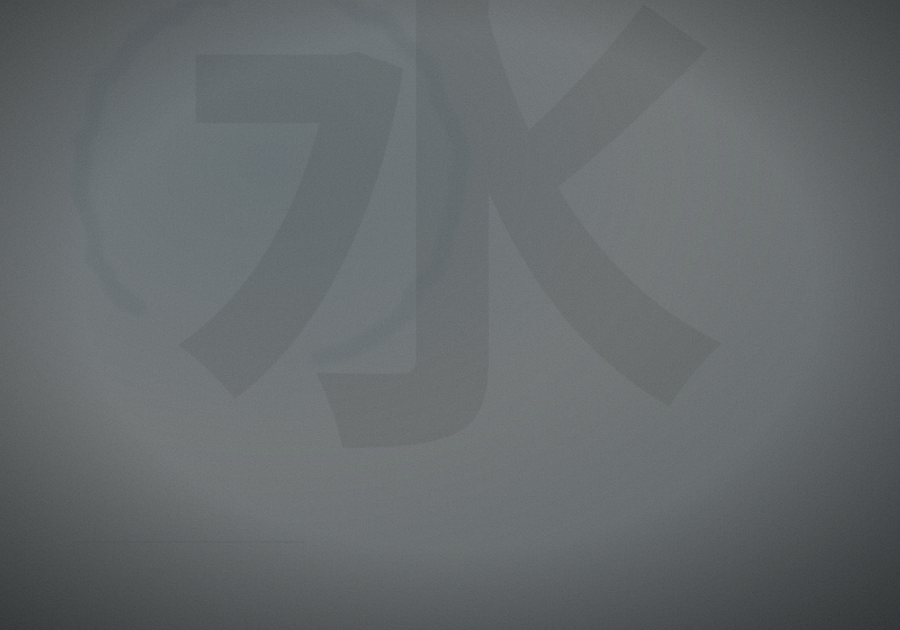
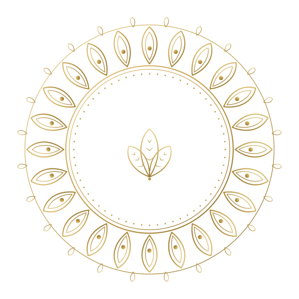
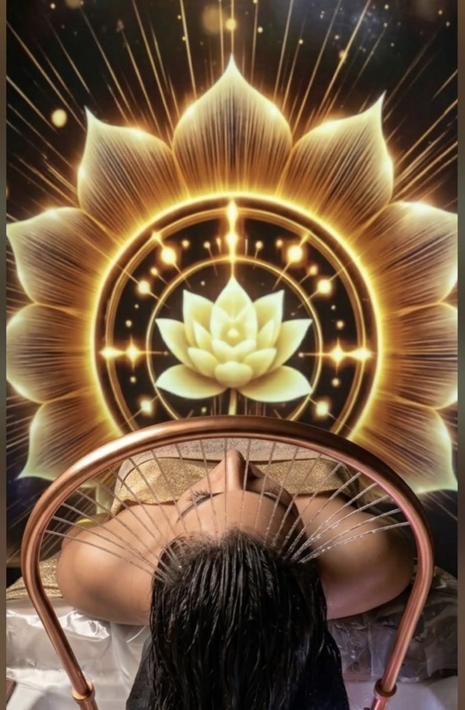
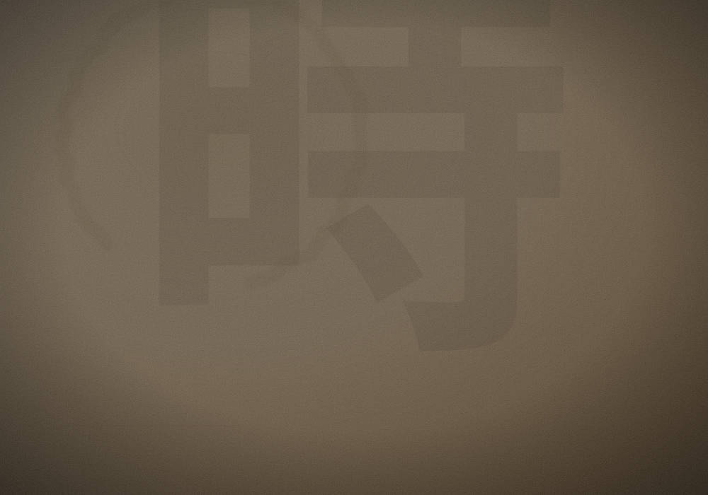
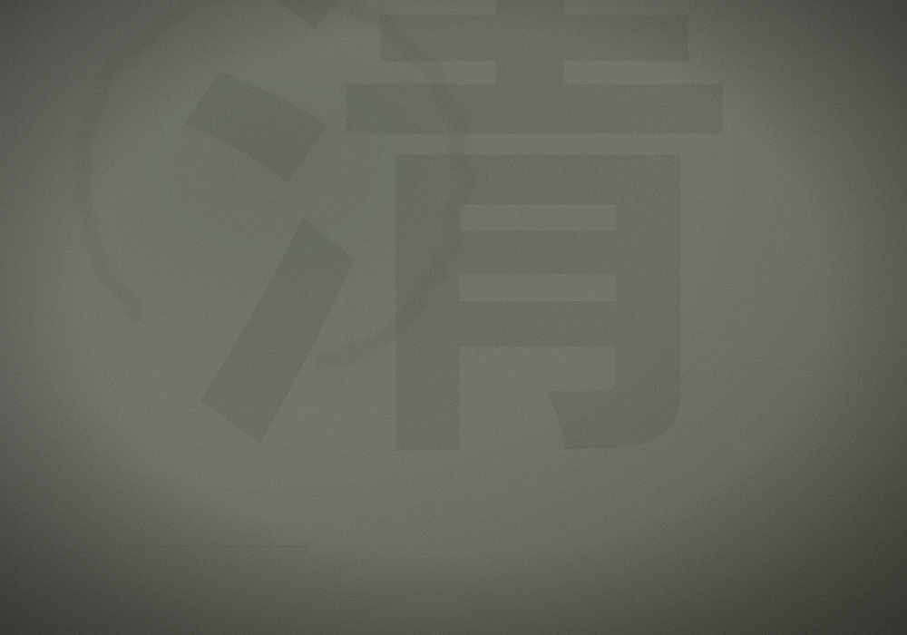
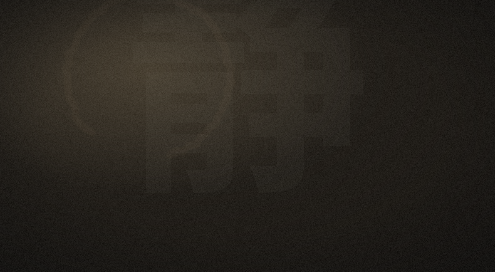

水

Mizu · Acqua
Rituale Mizu — Idratazione
Un'onda di idratazione per pelli assetate. La barriera cutanea si ripara, la pelle ritrova morbidezza e luce.

KEIBIDO Benessere DivinoTrattamenti viso d'ispirazione giapponese, dove la scienza della pelle incontra la calma del gesto. Ogni seduta è un ritorno a sé.

Nella filosofia giapponese, la bellezza non si impone: si coltiva. Crediamo che una pelle luminosa nasca dal tempo, dal rispetto e da un gesto preciso, ripetuto come un rito.
Quattro protocolli viso su misura, ispirati agli elementi. Ogni rituale integra il massaggio kobido, l'antico lifting manuale giapponese.

Un'onda di idratazione per pelli assetate. La barriera cutanea si ripara, la pelle ritrova morbidezza e luce.
Vitamina C, massaggio kobido e attivi illuminanti per un incarnato che riflette la luce.

Il tempo, gentilmente sospeso. Lifting manuale kobido e attivi rimpolpanti per ridisegnare i contorni.

Detossina e riequilibra le pelli miste e impure, senza aggredire. Pori affinati, pelle fresca.
Ogni rituale segue quattro tempi. Nulla è lasciato al caso, tutto è pensato per la tua pelle e per il tuo respiro.
Ascoltiamo la tua pelle con uno skin-check approfondito, per un protocollo davvero su misura.
Doppia detersione e preparazione della pelle. Il gesto che apre il rituale.
Attivi selezionati e massaggio kobido. Mani esperte, ritmo lento, risultati visibili.
Protezione, tè e un momento tutto per te. Esci rinnovata, dentro e fuori.

Legni chiari, luce morbida, silenzio. Dal momento in cui varchi la soglia, il mondo resta fuori. Rimane solo la tua pelle e il tempo per prendertene cura.
Non è un trattamento, è una pausa dal mondo. La mia pelle non è mai stata così luminosa.
Il massaggio kobido è pura magia. Esco ogni volta rigenerata e distesa.
Eleganza, competenza, calma. Il Keibido ha cambiato la mia idea di cura di sé.
Ogni rituale è guidato da estetiste formate alle tecniche viso giapponesi, dal kobido alla cura della barriera cutanea. Prodotti d'eccellenza, gesti su misura, nessuna fretta.
Perché la vera bellezza non è un risultato: è una relazione, coltivata nel tempo.
Prenota la tua prima consulenza viso. Ti aspettiamo nel cuore di Rimini, per disegnare insieme il rituale perfetto per la tua pelle.